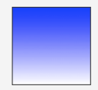

Propiedad Background
La propiedad background es un atajo para definir los valores individuales del fondo en una única regla CSS. Se puede usar background para definir los valores de una o de todas las propiedades siguientes: background-attachment, color, image, position, repeat. Esta propiedad aplica a todos los elementos del contenedor seleccionado.

Valores de la propiedad background
Background-color
Esta propiedad de CSS es la que define el color de fondo de un elemento, puede ser el valor de un color o “transparente” que es el valor inicial de esta propiedad, es decir, sea el color que tenga el contenedor se verá el color de fondo de la página. Si esta no tiene un color seguramente es blanco ya que es el valor por defecto de los navegadores.
Se puede especificar el color de fondo como un valor RGB hexa-decimal o regular, o utilizando una de las palabras claves predefinidas de color.
Background-image
Esta propiedad establece una o más imágenes de fondo para un elemento. La ventaja de usar una imagen como background es que podemos adaptarla a medida del contenedor.
Para especificar esta propiedad debemos usar el valor “url()” en donde pondremos entre los paréntesis la localización de la imagen que se utilizará de fondo. Debemos recordar que esta localización puede ser relativa o absoluta.
Las imágenes de fondo son mostradas encima del color de fondo.
Background-repeat
Esta propiedad define cómo se repiten los fondos del documento. Un fondo de la imagen puede ser repetido sobre el eje horizontal, eje vertical, ambos ejes, o no estar repetido.
Esta propiedad tiene distintos valores asignados para el flujo del “background” que estamos aplicando en el contenedor. Es principalmente usado para controlar las dimensiones de las imágenes. Estos valores son:
- Repeat: La imagen se repite hasta cobrir todo el fondo existente. La última imagen debe ser recortada si no encaja.
- Space: La imagen se repite lo máximo posible sin recortarse. La primera y última imagen son fijadas a cada lado del elemento, y el espacio blanco es distribuido igualmente entre las imágenes. La propiedad background-position es ignorada a menos que una sola imagen pueda ser desplegada sin recortar. El único caso donde se recorta usando space es cuando no hay suficiente sitio para desplegar una imagen.
- Round: Como el espacio permitido aumenta, las imágenes repetidas se estrechan (sin dejar huecos) hasta que haya espacio suficiente (espacio restante >= la mitad del ancho de la imagen) para que otra sea añadida. Cuando la próxima imagen es añadida, todas las demás son comprimidas al espacio disponible. Ejemplo: Una imagen con un ancho inicial de 260px, se repite 3 veces, debería estirarse hasta que el tamaño sea de 300px, luego otra imagen debe ser añadida. Luego deberían comprimirse hasta los 225px.
- No-Repeat: La imagen no se repite (y por lo tanto el área coloreada de la imagen de fondo no debe ser rellenada completamente). La posición del fondo no repetido es definida por la propiedad de CSS background-position.
Background-Attachment
Esta propiedad determina si la posición de la imagen de fondo será fija dentro de la pantalla o se desplazará con su bloque contenedor.
Si el valor scroll es especificado, la imagen de fondo se moverá dentro de la pantalla junto al bloque que la contiene.
Si el valor fixed es especificado, la imagen de fondo estará fija en la pantalla y no se moverá con el bloque contenedor.
Esta propiedad soporta múltiples imágenes de fondo. Puedes especificar un attachment diferente por cada imagen de fondo, separado por comas. Cada imagen es asociada con el correspondiente valor de attachment, especificado desde el primero hasta el último.
Degradados
Existen dos posibilidades en CSS3: degradado lineal o degradado radial.
Degradado lineal
Para crear un gradiente lineal, se establece un punto de partida y una dirección (indicada por un ángulo) a lo largo de la cual se aplica el efecto. Usted también puede definir paradas de color. las paradas de color son los colores que usted desea que Gecko renderice con suaves transiciones entre ellos, y usted puede especificar al menos dos de ellas, pero puede especificar más para crear efectos de gradientes más complejos.
Sintaxis
Aquí está un gradiente lineal que inicia en el centro (horizontalmente) y arriba (verticalmente), e inicia en azul, transicionando a blanco.

Cambiando el mismo gradiente para correr de izquierda a derecha: